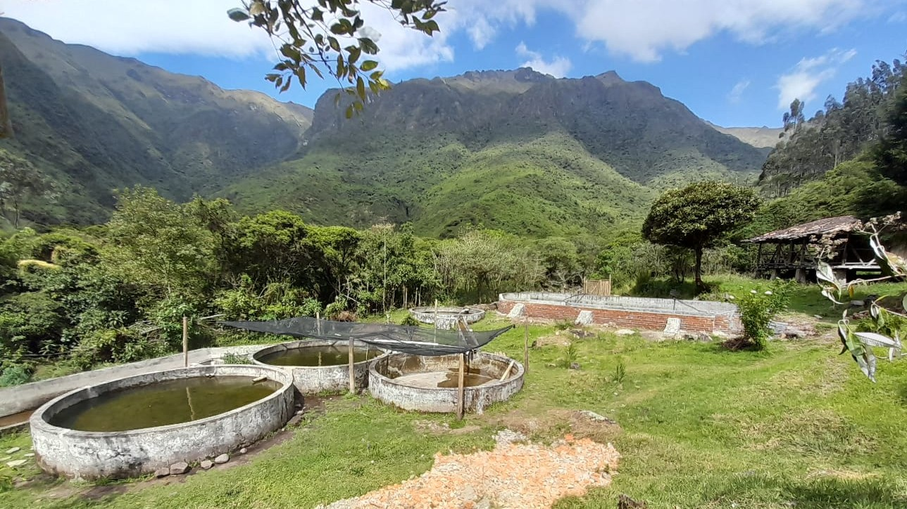

Bienvenidos a la Rinconada de Pijal
Tu refugio natural en el corazón del campo
Disfruta de una experiencia única de turismo rural, rodeado de montañas y aire puro. En La Rinconada encontrarás paz, naturaleza y tradición.
Sobre nosotros:
La Rinconada de Pijal es un espacio creado para reconectar con lo esencial. Somos una familia dedicada a la agricultura y al turismo rural. Nuestras instalaciones están diseñadas para ofrecer comodidad sin perder el encanto rústico del campo. Aquí no solo vienes a hospedarte, sino a vivir la vida rural de cerca: alimentar animales, cosechar, cocinar con productos frescos y compartir junto al fuego.
¿Qué ofrecemos?
Cabañas cómodas
Camping
Comida casera y orgánica
Senderos ecológico
Fogatas familiares
Pesca deportiva